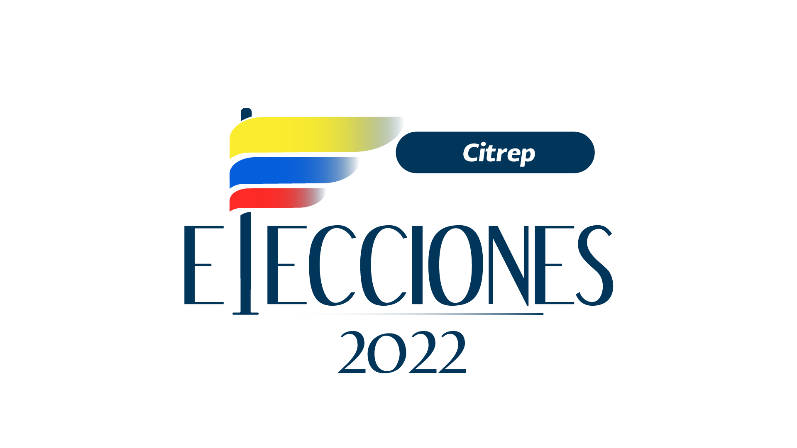
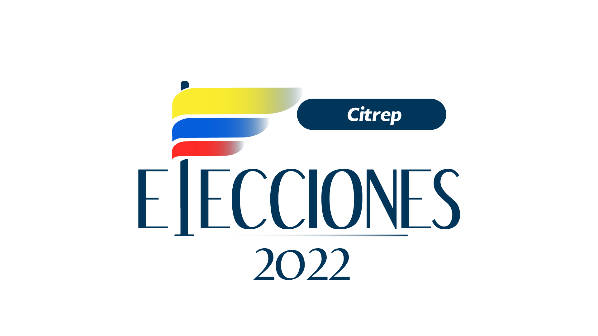

El senador Gustavo Petro regresa a la contienda electoral por la Presidencia para 2022-2026. El precandidato de la coalición Pacto Histórico propone varias reformas a fondo en salud, impuestos, trabajo, pensiones, aranceles y petróleo.
¿Cuál sería su estrategia para lograr un crecimiento constante del PIB?
Parte de ese crecimiento es la reactivación al frenar las cuarentenas. Un dato importante, que no ha sido tan público, es que con esa misma magnitud de la recuperación de algunos sectores están creciendo unas actividades que no responden simplemente a una apertura: confecciones y calzado.
Ahí creo que está funcionando es el efecto protección del comercio internacional, que genera la devaluación intensa del peso. Se vuelven muy caras las importaciones, y resurge la industria nacional. Eso nos muestra que tenemos razón en proponer un sistema arancelario inteligente. Hay que mirar que tanto aporta un arancel a la creación de valor agregado, ya sea porque se eleve o disminuya, por ello lo he llamado una política arancelaria inteligente.
¿Qué modelo plantea en salud y cómo garantizaría la cobertura de las EPS?
Esto es algo que hicimos en Bogotá. No tuvimos mayores conflictos, pero a nivel nacional tiene que haber un sistema de referencia. Logramos en 2015 cerca de 7 millones y medio de consultas en los hogares, que enfocamos en estratos 1 y 2, y cubrimos a 800.000 familias con varias consultas al año. El resultado en tasas de mortalidad, desnutrición y morbilidad mostraron reducciones.
Cuando un médico detecte una enfermedad de alguien que deba ser hospitalizado o atendido en un centro y lo remita, cuando llegue a ese centro viene el espacio con las EPS, que debe pagar. En realidad yo creo que las EPS sobran, pero si la EPS no está ahí, porque en muchos territorios es enclenque el servicio de las EPS, entonces las Secretarías de Salud tienen que estar listas para asumir ese papel cuando ya se trata de un servicio de asistencia.
¿Plantearía una reforma pensional o laboral?
Ambas. Una reforma laboral debe tener como objetivo estabilidad laboral, evitar los contratos basura de tres meses, porque eso incrementa la productividad y el bienestar. Una reforma pensional debe tener como objetivo que todos los miembros de la tercera edad no pensionados reciban al menos media pensión, son 3 millones de personas, y eso implica $18 billones anuales. La única manera de lograr esa partida es liberar al Estado de las transferencias que hace a Colpensiones y para que Colpensiones pueda pagar a sus pensionados, que son la mayoría de Colombia, se necesita que entren allí los recursos de trabajadores, lo que se llama un sistema de reparto simple.
Que entren a pagar directamente pensionados con la garantía de que el cotizante recibirá en su momento su pensión y por el mismo mecanismo. El fondo privado entonces quedaría libre para que aquellos de altos salarios quieran complementar sus beneficios pensionales con un ahorro personal.
¿Impulsaría una nueva tributaria?
Sí, lo primero es derogar la del 2019, ahí empieza a resolverse el déficit fiscal. Adicionalmente, tenemos que elevar el impuesto a los dividendos, elevar el predial a tierras fértiles e improductivas en manos de latifundistas, que sería un impuesto municipal que iría a educación y eso sustancialmente sería la reforma. Al derogar la reforma de 2019 se revive la renta presuntiva, y debe haber un artículo especial para gravar las rentas que se han ido a paraísos fiscales.
Usted ha dicho que la junta del Banco de la República está influenciado por el partido de gobierno y que lo reformaría, ¿qué cambios haría?
En realidad no se necesita una reforma. Yo tendría el derecho de nombrar unos miembros en la junta, pero esos no serán como los que nombro Duque, entonces ya se crea un pluralismo. Ellos tendrían mayoría a uno, pero yo creo que el Banco de la República debería acatar la sentencia 481 de 1999, que expresa como mandato constitucional lo que yo ya afirmé, es una orden de la Corte, y es que los objetivos del Banco de la República no son exclusivamente mantener la capacidad adquisitiva de la moneda, o sea, luchar contra la inflación, sino la producción y el empleo en Colombia.
Desde la creación de la junta en 1991, la inflación ha descendido, ¿considera que no han cumplido esa tarea?
No, porque el otro aspecto que le ordena la Constitución no lo ha cumplido que es que crezca el empleo, entonces se puede sacrificar el empleo, es una economía raquítica con la mayor parte de la población en el rebusque, ganando menos del salario mínimo, pero con tasas inflacionarias bajas, hasta la del último año, y eso no es compatible con una buena economía.
Usted ha dicho que si llegase a ser presidente cesaría la exploración petrolera, ¿cómo sustituir esa renta?
El sistema petrolero actual en todo el mundo se va a acabar, eso no lo digo yo. Todas las reuniones de presidentes de las COP, buscan cómo hacerlo. Lo que a mí me corresponde es cómo lograr que la economía colombiana transite hacia una economía descarbonizada, tenemos un plazo de más o menos 12 años para lograrlo, es más o menos lo que nos durarían las reservas petroleras y podemos lograrlo aun teniendo petróleo en nuestras reservas. Pero hay que empezar ya.
A corto plazo tenemos opciones como aumentar al valor agregado del café, mucho turismo y exportaciones de cannabis. A mediano plazo hay que aumentar la productividad agraria del país.
¿Mantendría los programas sociales actuales?
Vemos por ahora una tendencia a la ‘dulcificación’ del virus, las probabilidades de nuevas cuarentenas parecen alejarse. Si el contexto es de una normalización transitoria de la salud pública en el mundo, tenemos que enfocarnos en una economía capaz de generar muchos puestos de trabajo y mucha equidad.
Hay que recuperar 600.000 empresas que se quebraron, precisamente, por la falta de subsidios. Son pequeñas y medianas empresas, y con trabajo femenino en general. La destrucción de esas empresas se pudo haber evitado, y eso trajo no solo el incremento de la tasa de desempleo femenino, sino del hambre.
Y no por ausencia alimentaria, sino que es por falta de ingresos para comprar, y además, el precio de las mercancías alimentarias se disparó porque son importadas o usan insumos importados. Hay que hacer una política ‘anti-hambre’. Colombia produce alimentos suficientes para alimentar su pueblo y podría hacerlo mejor, pero el Estado tiene que aparecer. Una política alimentaria de urgencia es algo que toca.